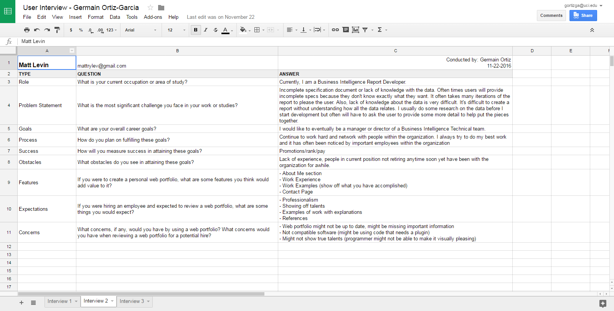
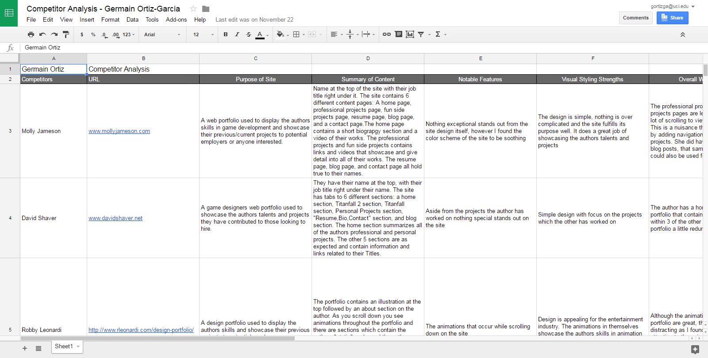
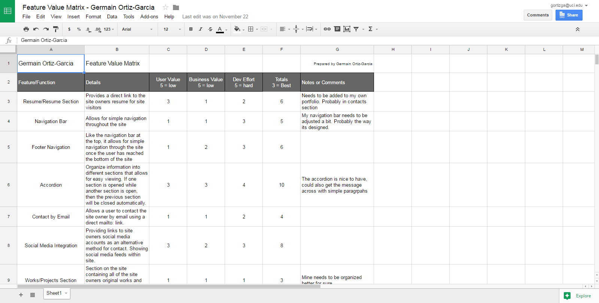
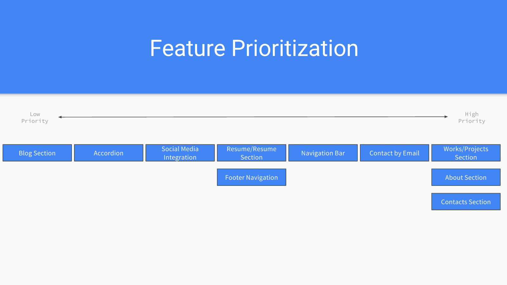
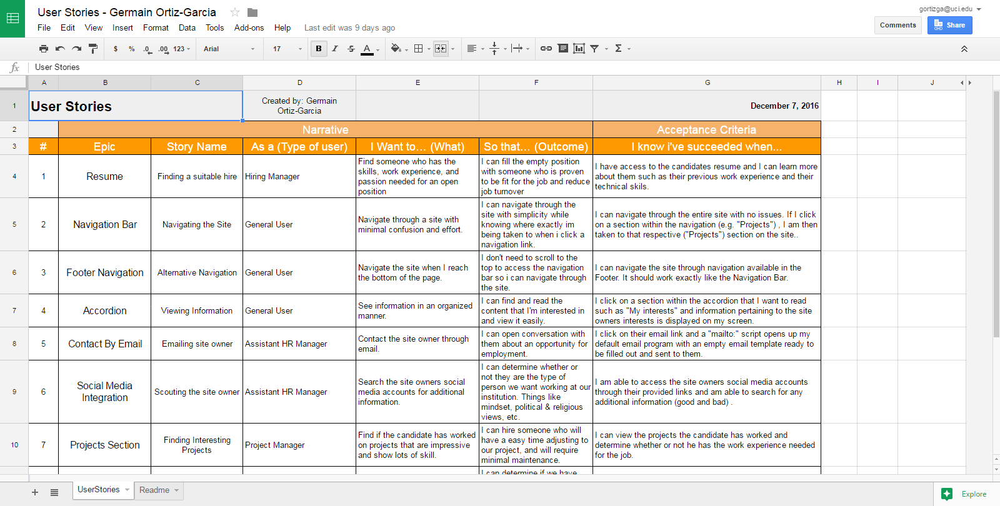
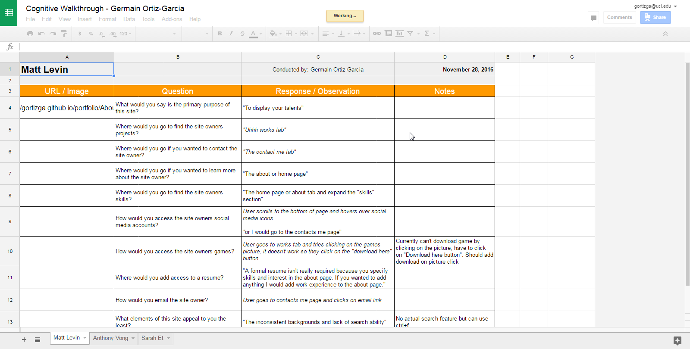
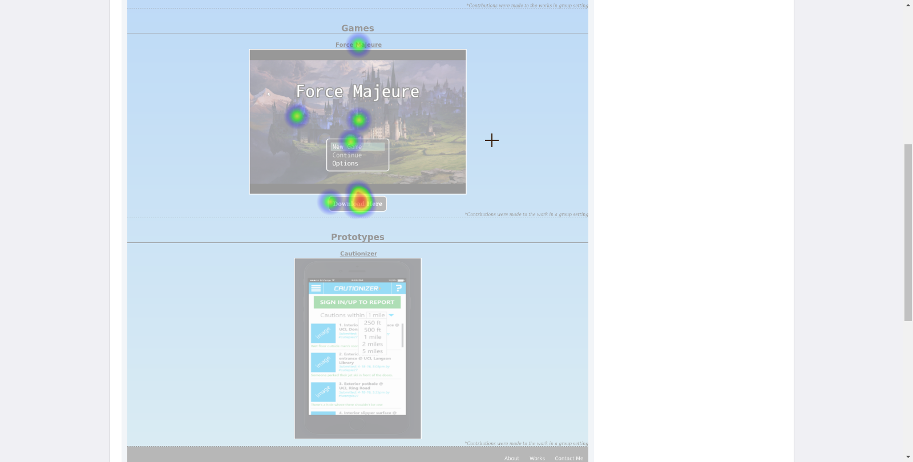

User Interviews
User interviews are crucial to the design process because they give you a general idea of what the user needs from a site, what their goals are when using a site, and how they will interact or behave with a site.
They types of questions asked in these interviews include: What features a user would add to their portfolio if they made one? What the user would expect to see in a portfolio? What concerns would the user have when reviewing a portfolio?
View the user interviews

Competitor Analysis
The purpose of a competitor analysis is to look at competing products/companies and analyze what they are doing that is working for and what is not working for them and their users.
For my competitor analysis I reviewed 4 portfolios who belonged to professionals who are in the work field which I wish to pursue. I analyzed their portfolios to determine what I should include in my portfolio and what I should change.
View the competitor analysis

Feature Value Matrix
A feature value matrix allows you to analyze all features of your product and of competitor products based off how useful the features are and how difficult they are to implement.
By doing this you get a good grasp of which features should be highly prioritized and which shouldn't.
The features I selected were included because they were features I saw on competitor sites and some I already had implemented on my site.
View the feature value matrix

Feature Prioritization
The way I prioritized my features was based off how useful I believed the features would be to those who visited my site, and how hard they would be for me to implement.
For example, I found that giving a visitor to my site the ability to contact me by email was really important and simple to implement, so I highly prioritized the feature and added it to my site.
View the feature prioritization

User Stories
User stories are important because they help you determine how your product will be used by different types of users and why they are using your product.
I created my user stories by taking all of my sites features and figuring out how each individual feature could be useful to some kind of user.
View the user stories

Cognitive Walkthrough
Cognitive walkthroughs are useful when creating a product because they give you a good idea of how easy it is to use your product, what aspects are confusing, and what specific tasks are difficult to complete.
The biggest challenge I faced when conducting the walkthroughs was that some uses joked around by purposely going to the wrongf page, etc. and I wasn't entirely sure how to handle that.
They might have been joking, but there could have have also been some seriousness when they did that and just tried to play it off.
View the cognitive walkthrough

User Tests
For my site I conducted two click tests and one question test.
I chose to do a question test because it was simple to create and it was straight to the point for determining if my sites navigation was useful or not.
One of my click tests was similar to my question test as it just focused on navigation of the site, however, my second click test was used to confirm an issue that came up during the cognitive walkthroughs.
View the first user test result
View the second user test result
View the third user test result
During the process of my user research and user testing I learned a few interesting things about my portfolio site that I could use to improve it.
The user testing was more useful to me than the user research and that was because of the cognitive walkthrough.
I found that my portfolio did achieve its purpose in showcasing my skills to the visitors of my site.
At the moment my site designing skills are not the greatest and my site did a great job of showing that.
One of the users during the cognitive walkthrough told me that my site layout was bad and that I should consider revising it.
In addition, another user told me the changing backgrounds was not a good idea because consistency is a good thing to have in a site and it made the site seem a little confusing.
When creating my site I had a feeling both of these things were true, but the cognitive walkthroughs did a great job of reaffirming my suspicions.
The competitor analysis was also really useful because it allowed me to find features that I should work on implementing into my site.
In addition, being able to look at the effort others have put into their portfolios really shows the importance of having a portfolio that is not designed terribly.
One of the features that I saw in many portfolios that confused me a bit, was the inclusion of a blog in their portfolios.
I personally don't see how a blog is useful to anyone so I am a little perplexed as to whether or not I should create a blog in the future and include it into the improved version of my site.
An alternative to that was adding my twitter feed to my site, since that is the only social media I am currently active on.
The main thing I will focus on changing when I make improvements to the site will be the structure and layout of the site.
Since this was my first time coding a site from scratch the coding of the site can be drastically improved.
The final project page of my site is definitely coded better than the rest of my site as I have utilized divs more efficiently and made it more responsive than the other pages, which I also need to work on.
Im not sure how I will layout my site, but I will do some more competitor analysis too see how others generally layout their site so that I can do something similar.
Finding a color scheme that I like will also be a priority, however, I'd really like to make dark grey and blue work as those are my favorite colors.
Smaller scale issues that I need to improve include adding a Resume section, fixing the Projects (currently named "Works") section of my page to make it more visually appealing, and changing the About page so that there isn't a huge block of white space to the right of my name.
That information can be organized way better than I currently have it.
Another issue on the Projects page is that users during the cognitive walkthroughs and the user tests sometimes tried to download the game by clicking on the picture or the name of the game instead of the "download here" button.
I plan to fix this confusion by making the game download available through the picture and the name, as well as the button.
There are many other issues I have to fix, such as adding more content to the Contact Me page, the footer, and the site in general.